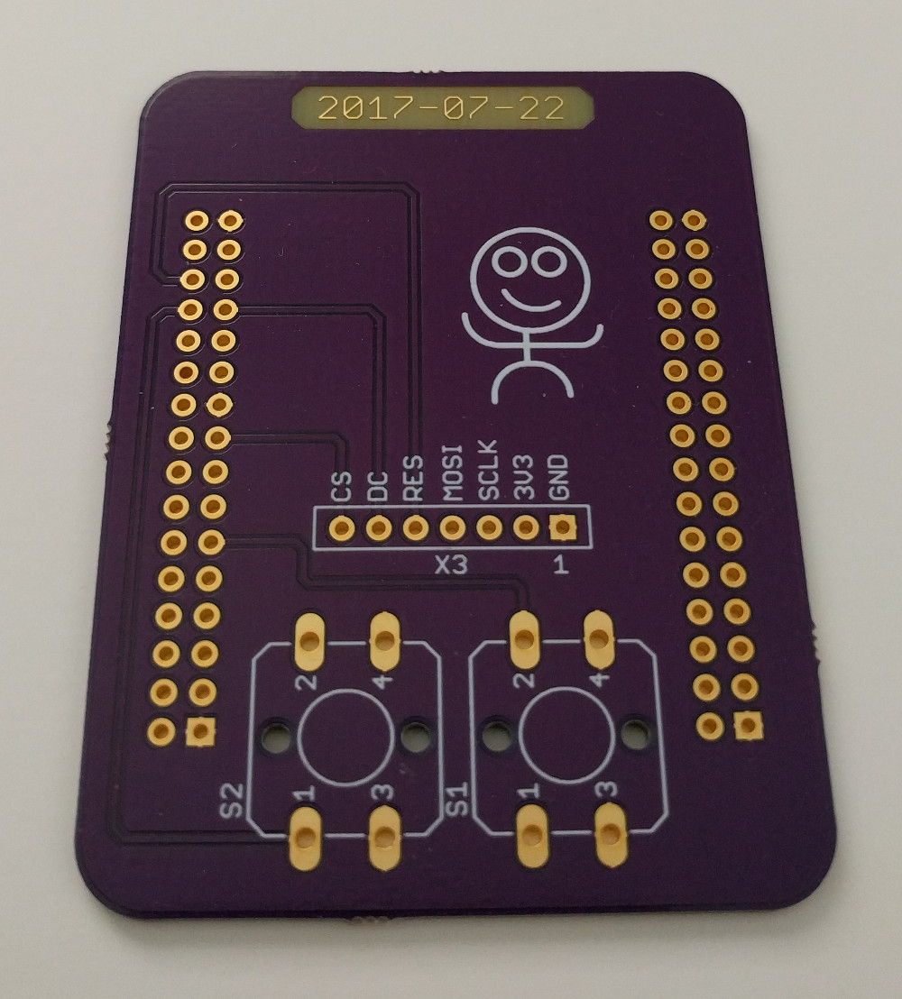
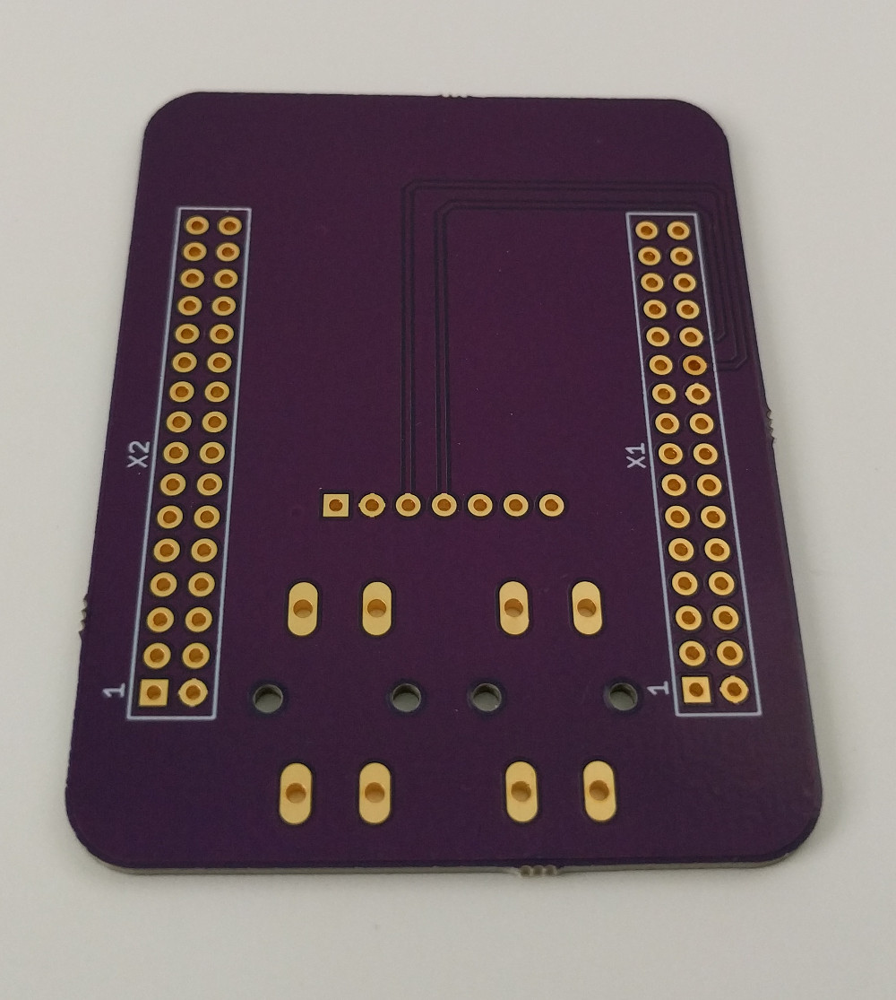
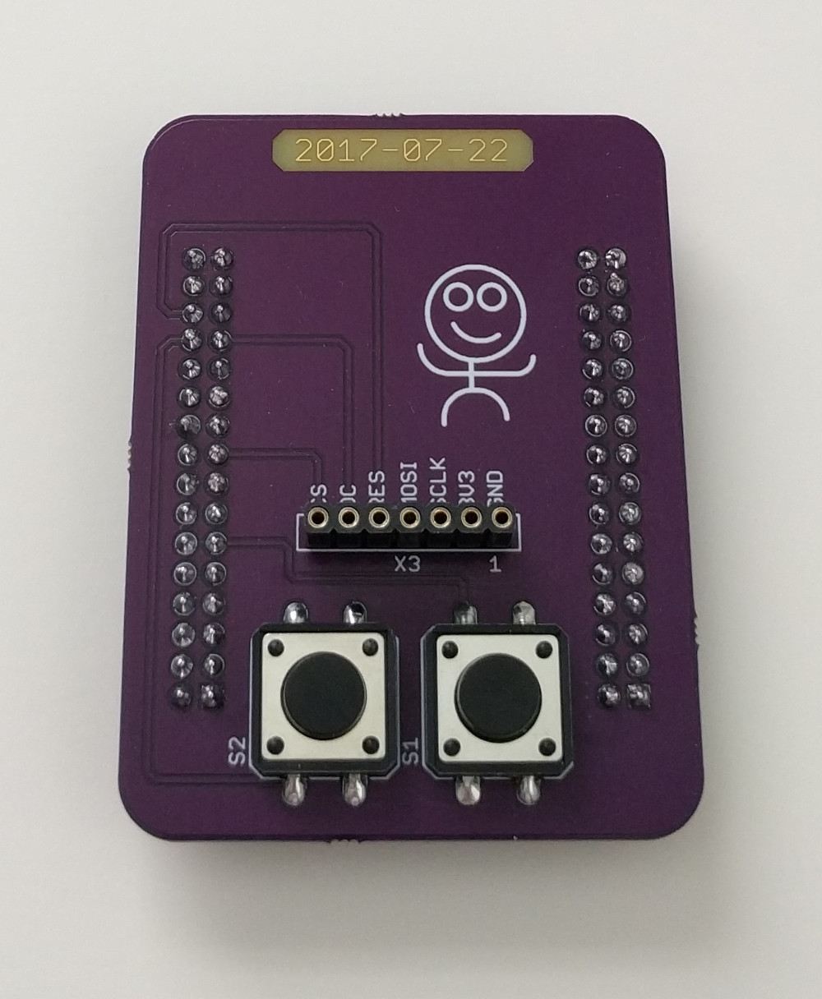
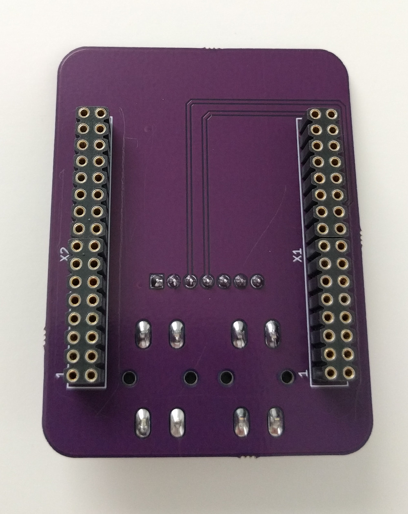
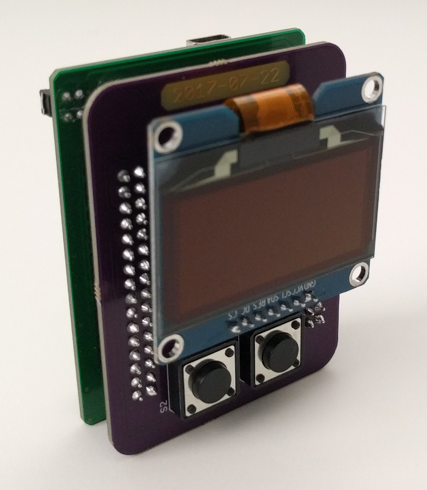
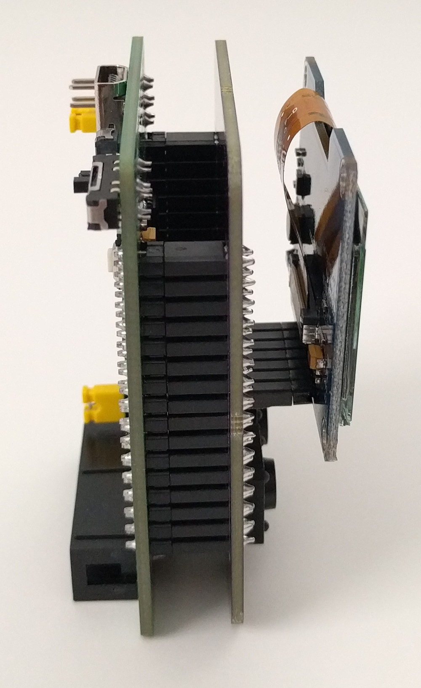
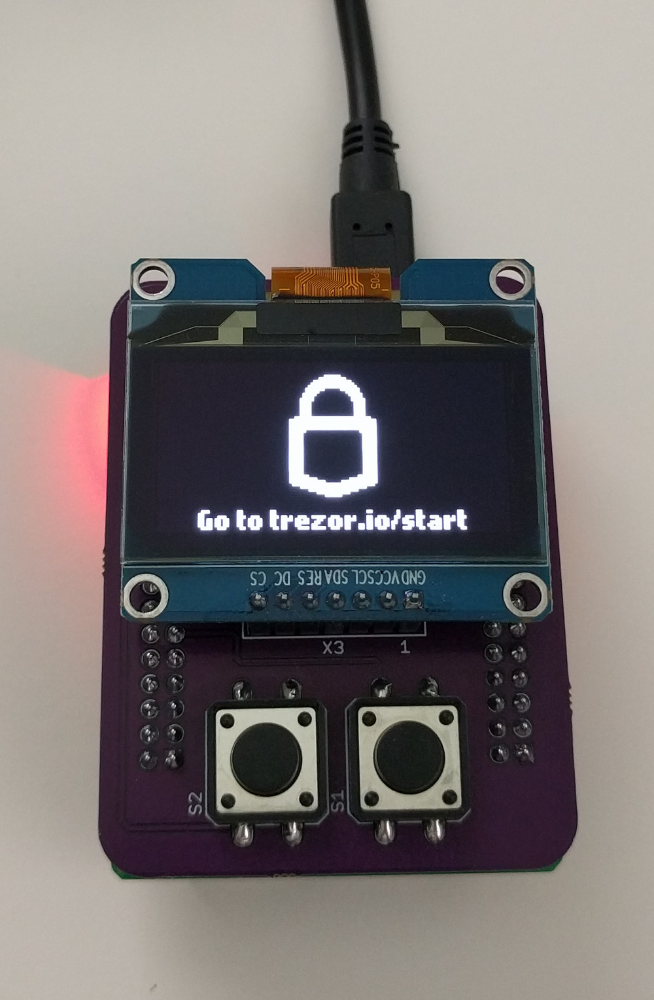
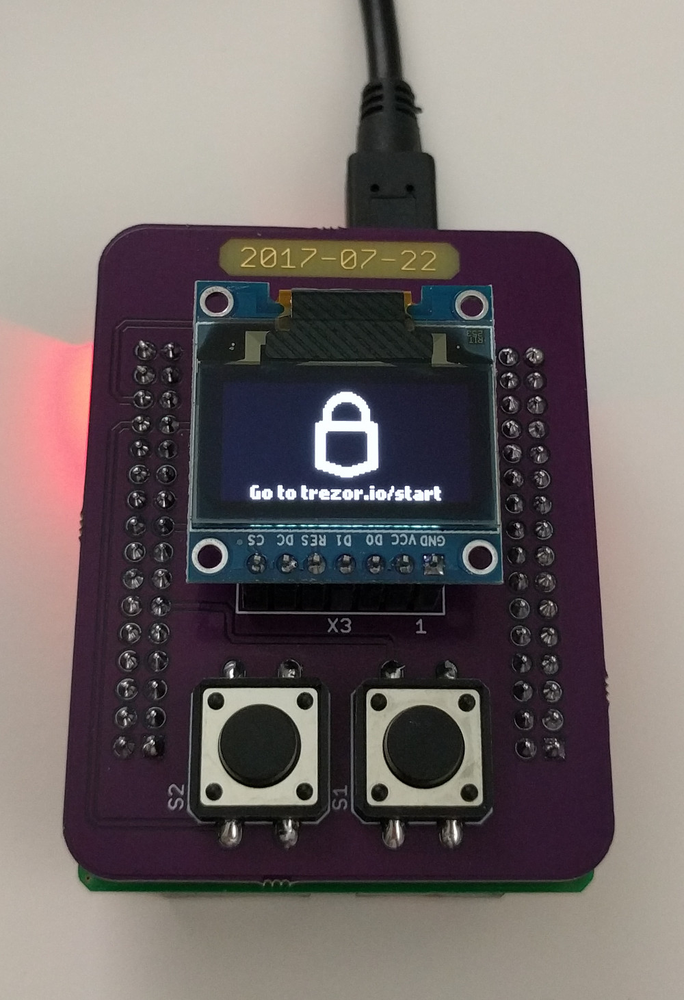
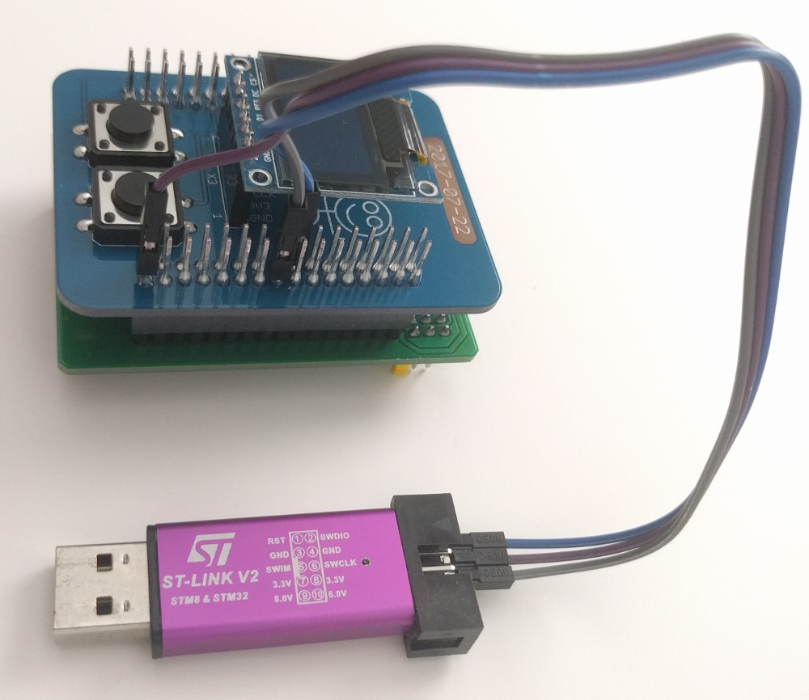
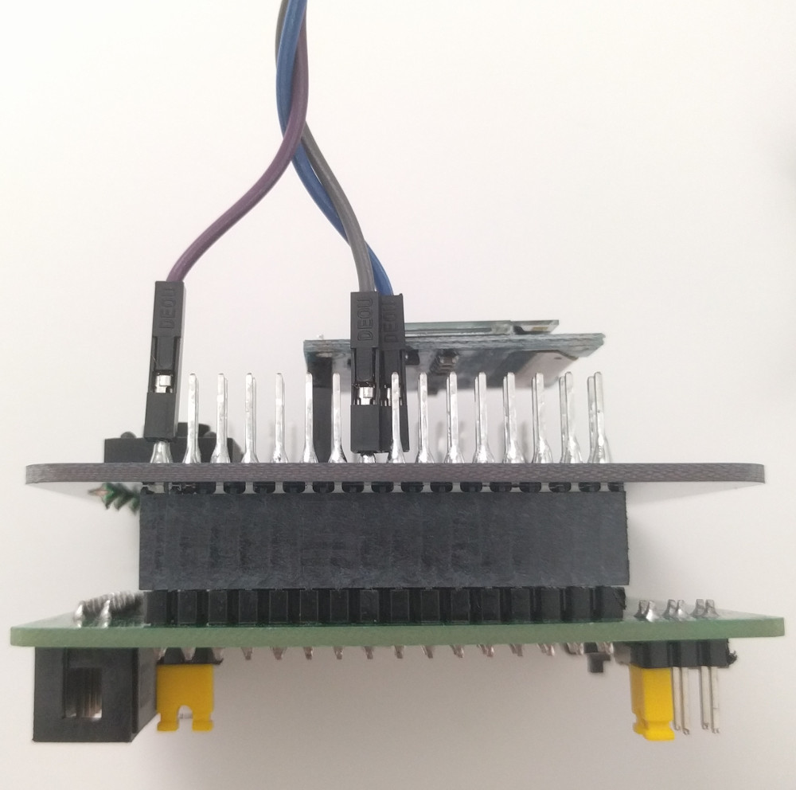

When contrasted to official production hardware, these kits are less safe to use for non-development purposes.
Necessarily, different selections were made for the key security properties of these developer kits vs. production hardware.
For example, when used as documented here, these kits purposefully leave debug capabilities enabled, and do not apply write protections to bootloader flash memory.
This is so that developers may repeatedly develop, test, and debug all types of changes.
Production hardware irreversibly disables debug capabilities and Device Firmware Upgrade (DFU) mode, and protects key memory areas as part of reducing attack surface and increasing depth of defenses.
There may be other subtle, yet meaningful, weaknesses as well, depending on your usage and threat model.
USE THESE KITS AT YOUR OWN RISK
Hardware
TREZOR One Open Source Hardware Reference Documentation
1 x 7-pin SPI 128x64 1.54 inch SSD1309 driven OLED Display Module (Note: The SSD1309 is compatible with the SSD1306. The v0 kit display is interchangeable with this display.)
1 x PWB (schematic and board files available here)
2 x 12mm x 12mm x 5mm tactile momentary switches
1 x USB Cable Type A Plug/Male to Type Mini-B Plug/Male
1 x 2.54mm Pitch, Single Row, 7 Position, Female/Socket Header (preci-dip 801-87-007-10-001101 works well)
2 x 2.54mm Pitch, Double Row, 16 Position, Female/Socket Header (preci-dip 803-87-016-10-001101 works well)
Solder and Soldering Tools
Fig H2. - Bare PWB (top)Fig H3. - Bare PWB (bottom)Fig H4. - Assembled PWB (top)Fig H5. - Assembled PWB (bottom)Fig H6. - Front angle view (with large 1.54 inch display)Fig H7. - Side view, PWB and display module stacked on the dev boardFig H8. - Installed and running (large 1.54 inch display)Fig H9. - Installed and running (regular 0.96 inch display)Fig H10. - 0.96 inch SSD1306 driven display and 1.54 inch SSD1309 driven display side-by-side (top)Fig H11. - 0.96 inch SSD1306 driven display and 1.54 inch SSD1309 driven display side-by-side (bottom)
Kit Contents: v2 (the second printed wiring board [PWB] version)
1 x 7-pin SPI 128x64 1.54 inch SSD1309 driven OLED Display Module (Note: The SSD1309 is compatible with the SSD1306. The v0 kit display is interchangeable with this display.)
1 x PWB (schematic and board files available here)
2 x 12mm x 12mm x 5mm tactile momentary switches
1 x USB Cable Type A Plug/Male to Type Mini-B Plug/Male
1 x 2.54mm Pitch, Single Row, 7 Position, Female/Socket Header (preci-dip 801-87-007-10-001101 works well)
4 x 2.54mm Pitch, Double Row, 16 Position, Female/Socket Header (preci-dip 803-87-016-10-001101 works well) -OR- 2 x 2.54mm Pitch, Double Row, 32 Position, Female/Socket Header (Samtec SSQ-116-03-T-D works well and has long leads for easy testing)
Solder and Soldering Tools
Fig H12. - Bare PWB (top)Fig H13. - Bare PWB (bottom)Fig H14. - Assembled PWB (top)Fig H15. - Assembled PWB (bottom)Fig H16. - Front angle view (with large 1.54 inch display)Fig H17. - Side view, PWB and display module stacked on the dev boardFig H18. - Installed and running (large 1.54 inch display)Fig H19. - Installed and running (regular 0.96 inch display)
About the Kits
One key difference between these kits and production hardware is the microcontroller (MCU) used.
Production hardware uses the STM32F205RET6 MCU and these kits use the STM32F405RGT6 MCU.
The former is an ARM® Cortex®-M3 and the latter is an ARM® Cortex®-M4.
The Cortex-M4 architecture is a backwards compatible superset of Cortex-M3. The additional features, like hard float capability, do not matter for this project.
The STM32F405RGT6 has 1MB of flash memory (vs the 205's 512KB), a core clock frequency adjustable up to 168MHz (including the 205's 120MHz; with matching clock tree), and 128KB of SRAM (same as the 205; the 405 has an additional 64KB of CCMRAM, giving it 192KB of usable RAM).
The STM32F405RGT6 is pin-to-pin compatible with the STM32F205RET6 and uses the same TRNG (reference: STM32F405xx datasheet section 2.1, and AN4230 section 1.2.1).
The Waveshare Core405R dev board has an 8MHz high-speed external (HSE) crystal (matching the reference hardware), a STM32F405RGT6 MCU, a USB connector, power circuitry, SWD debug interface, boot mode select switch, and all the pins needed, broken out and available for use.
Setup
Wiring the Debug Adapter to the Dev Board
Pay attention to the pinout that is specified on the debug adapter.
Also, pay attention to the location of the notch on the header housing.
Note that the white rectangle printed next to pin 5 on the pinout specification in Figure H20 denotes the notch.
Connect the Debug Adapter's SWDIO, SWCLK, and GND pins (any one of the ground pins is sufficient) to the corresponding pins on the Dev Board's SWD connector.
Fig H20. - The Debug Adapter with Pinout SilkscreenFig H21. - The Debug Adapter NotchFig H22. - The Dev Board SWD ConnectorFig H23. - The Debug Adapter Wired - Debug Adapter SideFig H24. - The Debug Adapter Wired - Dev Board SideFig H25. - The Debug Adapter Wired
Note: Instead of using the JTAG/SWD connector, the debug adapter's SWDIO, SWCLK, and GND pins may also be connected to the dev board's PA13, PA14, and GND pins, respectively.
Fig H26. - The Debug Adapter Wired - Without using the JTAG/SWD ConnectorFig H27. - The Debug Adapter Wired - Samtec SSQ-116-03-T-D HeadersFig H28. - The Debug Adapter Wired - Using the PA13, PA14, and GND Pins
Setting Dev Board Jumpers and Switches
Set the Dev Board jumpers and switches as shown in Figure H29.
Fig H29. - The Dev Board Jumper and Switch Configuration
Wiring the Dev Board to the Breadboard Display and Switches
Use the following table to wire between the dev board and appropriate tie points on your breadboard. The following pictures are also helpful if you don't quite understand.
Pins on the dev board are documented by the silkscreen on the other side of the board. Pins on the display module are also documented by silkscreen.
Dev Board Pin
Breadboard Pin
Alternate Name
Comment
PC5
Button 2
Either button pin; connect GND to the other button pin; button is Active-Low
PA4
CS
Chip Select
Pin 7 on Pictured Display
PB0
DC
Data/Command
Pin 6 on Pictured Display
PB1
RES
Reset
Pin 5 on Pictured Display
PA7
SDA
MOSI
Pin 4 on Pictured Display
PA5
SCK
SCLK
Pin 3 on Pictured Display
3.3V
VDD
3V3
Pin 2 on Pictured Display
GND
GND
Ground
Pin 1 on Pictured Display
PC2
Button 1
Either button pin; connect GND to the other button pin; button is Active-Low
Fig H30. - Dev Board WiringFig H31. - Dev Board WiringFig H32. - Dev Board WiringFig H33. - Dev Board WiringFig H34. - Dev Board WiringFig H35. - Dev Board Wiring
This setup process comprises steps to install development and debugging tools on a temporary computer, then build and install a bootloader and firmware on the kit's MCU.
The following setup process was documented while running an Ubuntu 18.04 LTS Desktop (Bionic Beaver) Live CD as user ubuntu.
Connect to the Internet
cd /tmp/
Install required software packages
sudo add-apt-repository universe
sudo apt-get update
sudo apt-get -y install git openocd make protobuf-compiler libprotobuf-dev python-pip
Download, build, and package the TREZOR One bootloader and firmware from source code Note: The "export MEMORY_PROTECT=0" is what controls the code that locks the bootloader's flash memory on your dev board.
Warning: If you compile with MEMORY_PROTECT=1 (the default if not set as directed below), and run it on your dev board, you will lock your MCU's bootloader flash memory sectors and permanently disable debug capabilities.
Open another terminal, then connect gdb to the OpenOCD process that was started in the previous step, and send OpenOCD the flash command to write the combined bootloader and firmware binary to MCU flash memory:
arm-none-eabi-gdb --nx -ex 'set remotetimeout unlimited' -ex 'set confirm off' -ex 'target remote 127.0.0.1:3333' -ex 'monitor reset halt' -ex 'monitor flash write_image erase /tmp/trezor-mcu/bootloader/combine/combined.bin 0x08000000' -ex 'monitor reset halt' /tmp/trezor-mcu/bootloader/bootloader.elf
Flash has now been written. Set some test breakpoints and practice debugging code:
(gdb) b *reset_handler
(gdb) b *memory_protect
(gdb) b *load_app
(gdb) layout regs
(gdb) si
(gdb) c
(gdb) c
(gdb) d
(gdb) file ../../firmware/trezor.elf
(gdb) b *main
(gdb) c
(gdb) c
(gdb) Press Ctrl + C to interrupt software execution
(gdb) quit
Note that the symbol files were changed above at a point in the debugging process near bootloader-exit/firmware-entry. This was done in order to add breakpoints based on symbols relevant to the code being executed.
Also, be sure to check the display module and progress past the unofficial firmware warning message by pressing the appropriate buttons. Otherwise, it will seem as though your debugging session has simply stopped working. In fact, the code is just waiting for your user input.
Done flashing the software to the dev board and debugging. Kill the OpenOCD process and unplug the debug adapter and dev board.
Test the bootloader and firmware just loaded onto the dev board:
Plug-in the dev board and progress past the unofficial firmware warnings (if you are running the firmware that was compiled earlier and not an officially signed firmware).
Install eclipse so that a graphical environment can be used for debugging:
cd /tmp/
tar xzf eclipse-cpp-photon-R-linux-gtk-x86_64.tar.gz
mkdir -p /tmp/eclipse-workspace
Start OpenOCD and eclipse. Setup a debug configuration and debug graphically.
The full process to setup graphical debugging is shown in the video in Figure S1. Fig S1. - Eclipse Graphical Debugging Demonstration Video
Going Further
Loading and Running an Officially Signed Firmware
UPDATE: Loading officially signed firmware versions 1.6.1 and later onto your dev kit is NOT recommended. Doing so, risks your bootloader flash memory sectors being locked. For more info, see this and this.
In the setup process, a self-built bootloader and firmware was compiled, combined, and then loaded onto the MCU flash. To use an officially signed firmware, simply replace fw.bin in the setup process above before running prepare.py. Then run the prepare.py and load the newly created combined.bin onto the MCU.
An officially signed firmware can be downloaded with:
wget -O fw.bin https://wallet.trezor.io/data/firmware/trezor-1.5.2.bin
Running Standalone
These kits can be used in a standalone configuration; without the debug adapter connected. Simply unplug and/or detach the debug adapter from the dev board and plug the dev board into your computer's USB port.
Fig O1. - The v0 Kit Running Standalone without Debug Adapter Connected
Flashing in DFU mode with dfu-util instead of flashing with OpenOCD
The setup process used OpenOCD to flash code into the MCU's flash memory and was done in non-Device Firmware Upgrade (DFU) mode.
DFU mode can be used instead. Doing so just requires using different tools, moving a switch, and unplugging and replugging the dev board a couple of times.
Using DFU mode is a little less convenient when compared to the flash process used above.
To use DFU mode
Unplug the dev board and debug adapter if either is plugged into your computer's USB port(s)
Flip the Boot Config switch to System/DFU mode (Number 2 in Figure H29 above)
Plug the dev board into your computer's USB port
Verify with:
lsusb | grep 'STMicroelectronics STM Device in DFU Mode'
You'll see something like:
0483:df11 STMicroelectronics STM Device in DFU Mode
cd /tmp/
sudo apt-get -y install dfu-util
dfu-util -a 0 -s 0x8000000 -D /tmp/trezor-mcu/bootloader/combine/combined.bin
Wait until finished and then unplug the dev board
Flip the Boot Config switch back to Flash mode (Number 2 in Figure H29 above)
Plug the dev board into your computer's USB port. You're now running the code that you just stored into the MCU's flash memory.
Getting Info About and Erasing MCU Flash
Retrieve info about current state of the flash memory sectors
(gdb) monitor flash info 0
Erase all flash memory sectors
(gdb) monitor flash erase_sector 0 0 last
Q: How can I verify that the code I built will not lock the bootloader flash memory sectors?
A: Before flashing the code, you can check with: arm-none-eabi-objdump -d /tmp/trezor-mcu/bootloader/bootloader.elf | less
You can use that to search for the memory_protect function to make sure that the generated code does not perform the steps to enable memory protection.
Q: How can I build a specific version of the firmware?
A: Checkout the firmware's tag to a new branch and update the submodules. For example, to work on the version 1.6.2 firmware:
git checkout -b example tags/v1.6.2
git submodule update
Q: How can I use the debugger to find all occurences of a string in memory?
A: find 0x20000000,0x2001ffff,"123456789"
Q: How can I use the debugger to watch a specific string in memory?
A: display /s (char *) 0x20001000
Q: How can I veriy that the udev rules applied correctly to my USB device?
A: To verify, for example, that your dev kit (running TREZOR firmware) configured properly:
> lsusb | grep '534c:0001'
Bus 002 Device 007: ID 534c:0001 SatoshiLabs Bitcoin Wallet [TREZOR]
> ls -al /dev/bus/usb/002/007
crw-rw-rw- 1 root root ...
If the last line of your output matches the line above, then the udev rules are working.
Q: How can I disassemble a binary ".bin" file?
A: arm-none-eabi-objdump -b binary -D -marm -M force-thumb trezor-1.5.2.bin
Q: How can I write to a specific memory location while debugging?
A: set *(unsigned int *)0x20010000 = 0x11223344